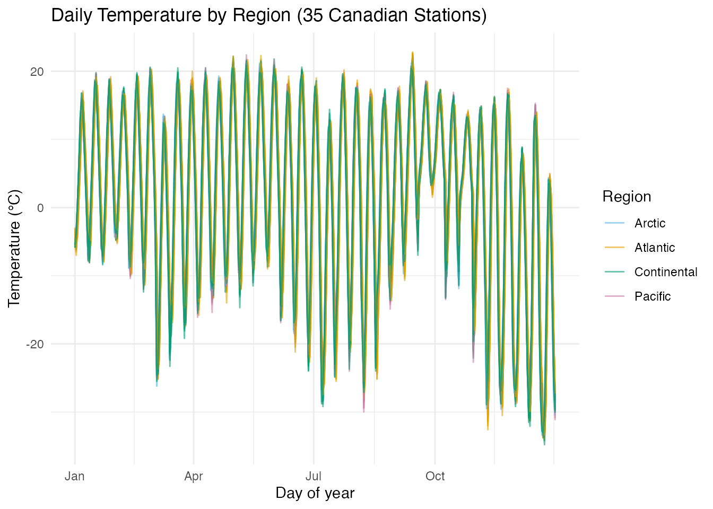
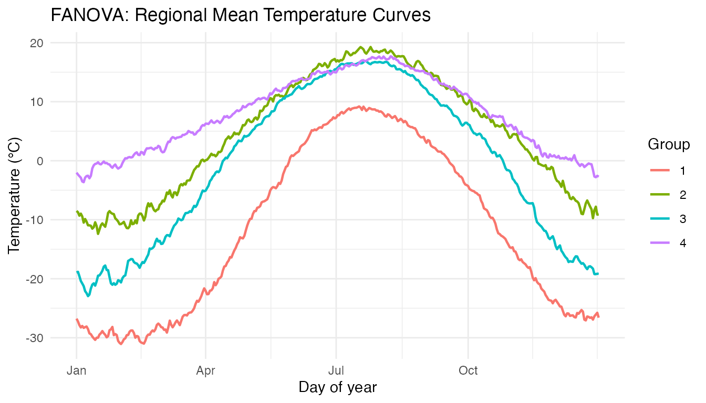
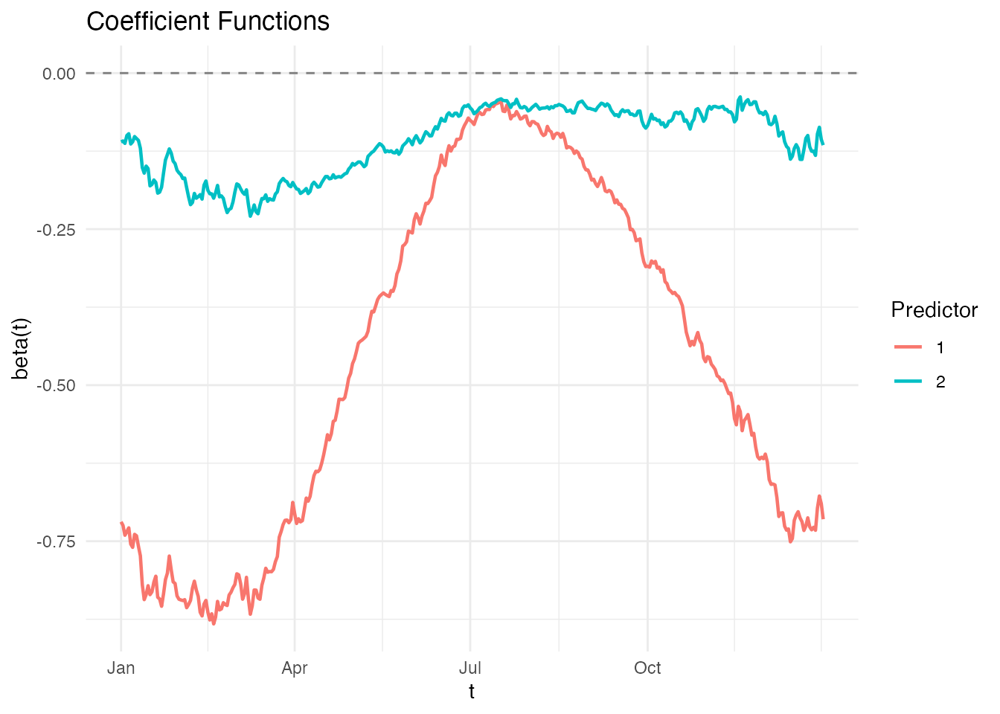
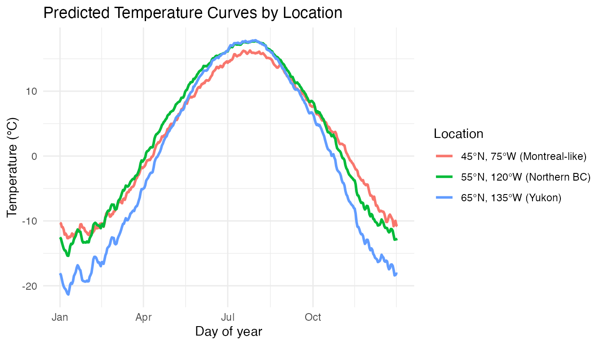
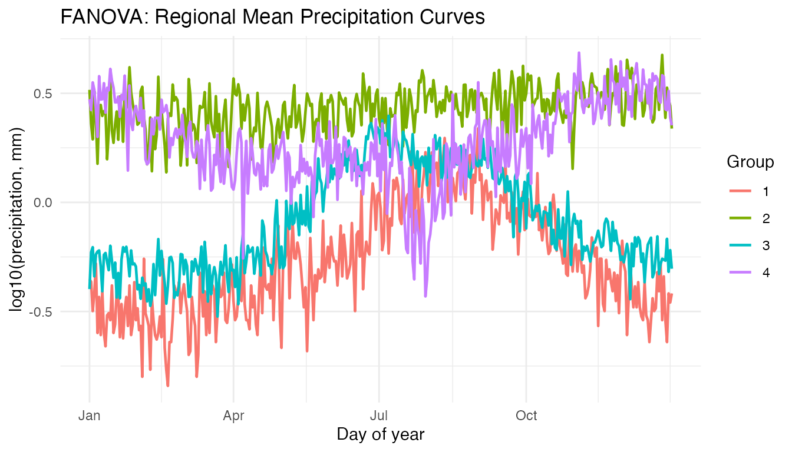

Canadian Weather: Regional Climate Patterns
Source:vignettes/articles/example-canadian-weather.Rmd
example-canadian-weather.RmdA climate analyst wants to characterize how geography shapes seasonal temperature and precipitation patterns across Canada. Functional ANOVA tests whether climate curves differ by region, while function-on-scalar regression reveals which geographic variables (latitude, longitude) drive seasonal variation.
| Step | What It Does | Outcome |
|---|---|---|
| Data preparation | Load 35 stations × 365 daily temperature/precipitation curves |
fdata objects colored by 4 regions |
| FANOVA (temperature) | Permutation test for regional mean differences | Strong rejection: regions differ significantly |
| Pairwise FANOVA | Test all region pairs | Pacific/Arctic most distinct; Atlantic/Continental overlap in summer |
| FOSR: temperature ~ geography | Regress temperature curves on latitude + longitude | Latitude dominates in winter; longitude effect peaks in spring/fall |
| Precipitation analysis | FANOVA + FOSR on precipitation curves | Regions also differ; Pacific has distinct wet-season pattern |
| Classification | Classify region from temperature curves | Cross-validated accuracy by region |
Key result: Latitude is the strongest predictor of temperature seasonality — its effect is largest in winter when Arctic/Continental stations drop far below Atlantic/Pacific ones. The permutation FANOVA confirms highly significant regional differences (p < 0.002).
The Canadian Weather dataset is a classic benchmark in functional data analysis (Ramsay and Silverman, 2005).
library(fdars)
#>
#> Attaching package: 'fdars'
#> The following objects are masked from 'package:stats':
#>
#> cov, decompose, deriv, median, sd, var
#> The following object is masked from 'package:base':
#>
#> norm
library(ggplot2)
theme_set(theme_minimal())Data Preparation
The dataset contains daily temperature and precipitation averaged over 1960–1994 at 35 Canadian weather stations, grouped into 4 regions.
data(CanadianWeather, package = "fda")
# Temperature: 365 x 35 matrix (days x stations) — transpose for fdata
temp_mat <- t(CanadianWeather$dailyAv[, , "Temperature.C"])
fd_temp <- fdata(temp_mat, argvals = 1:365)
# Precipitation (log mm)
precip_mat <- t(CanadianWeather$dailyAv[, , "log10precip"])
fd_precip <- fdata(precip_mat, argvals = 1:365)
# Region labels
region <- factor(CanadianWeather$region)
# Geographic coordinates
coords <- CanadianWeather$coordinates
latitude <- coords[, "N.latitude"]
longitude <- -abs(coords[, "W.longitude"]) # negative for West
cat("Stations:", nrow(fd_temp$data), "\n")
#> Stations: 35
cat("Grid points:", ncol(fd_temp$data), "(daily)\n")
#> Grid points: 365 (daily)
cat("Regions:", paste(levels(region), table(region), sep = ": ", collapse = ", "), "\n")
#> Regions: Arctic: 3, Atlantic: 15, Continental: 12, Pacific: 5Temperature Curves by Region
region_colors <- c("Arctic" = "#56B4E9", "Atlantic" = "#E69F00",
"Continental" = "#009E73", "Pacific" = "#CC79A7")
# Create data frame for ggplot
temp_df <- data.frame(
Day = rep(1:365, each = nrow(fd_temp$data)),
Temp = as.vector(t(fd_temp$data)),
Station = rep(rownames(fd_temp$data), 365),
Region = rep(as.character(region), 365)
)
ggplot(temp_df, aes(x = Day, y = Temp, group = Station, color = Region)) +
geom_line(alpha = 0.6) +
scale_color_manual(values = region_colors) +
labs(title = "Daily Temperature by Region (35 Canadian Stations)",
x = "Day of year", y = "Temperature (°C)") +
scale_x_continuous(breaks = c(1, 91, 182, 274),
labels = c("Jan", "Apr", "Jul", "Oct"))
Arctic and Continental stations show the widest annual swing (cold winters, warm summers), while Pacific stations have the mildest climate. The key question: are these regional differences statistically significant across the whole year?
Functional ANOVA: Do Regions Differ?
anova_temp <- fanova(fd_temp, region, n.perm = 500)
print(anova_temp)
#> Functional ANOVA
#> ================
#> Number of groups: 4
#> Number of observations: 35
#> Global F-statistic: 22.5107
#> P-value: 0.001996
#> Permutations: 500The small p-value confirms that the four regions have significantly different mean temperature curves — the visual separation is real, not a sampling artifact.
plot(anova_temp) +
scale_x_continuous(breaks = c(1, 91, 182, 274),
labels = c("Jan", "Apr", "Jul", "Oct")) +
labs(title = "FANOVA: Regional Mean Temperature Curves",
x = "Day of year", y = "Temperature (°C)")
The group means show the expected pattern: Arctic coldest year-round, Continental with the largest amplitude, Pacific mildest, Atlantic intermediate. The separation is greatest in winter (days 1–90 and 275–365).
Pairwise FANOVA
Which specific region pairs differ?
# Test each pair of regions
pairs <- combn(levels(region), 2)
pairwise_results <- data.frame(
Region1 = character(), Region2 = character(),
F_stat = numeric(), p_value = numeric(),
stringsAsFactors = FALSE
)
for (j in 1:ncol(pairs)) {
idx <- region %in% pairs[, j]
result <- fanova(fd_temp[idx, ], region[idx, drop = TRUE], n.perm = 500)
pairwise_results <- rbind(pairwise_results, data.frame(
Region1 = pairs[1, j], Region2 = pairs[2, j],
F_stat = round(result$global.statistic, 2),
p_value = result$p.value
))
}
knitr::kable(pairwise_results, caption = "Pairwise FANOVA p-values")| Region1 | Region2 | F_stat | p_value |
|---|---|---|---|
| Arctic | Atlantic | 51.83 | 0.0019960 |
| Arctic | Continental | 18.99 | 0.0059880 |
| Arctic | Pacific | 55.39 | 0.0239521 |
| Atlantic | Continental | 13.19 | 0.0019960 |
| Atlantic | Pacific | 5.61 | 0.0079840 |
| Continental | Pacific | 15.54 | 0.0019960 |
Arctic vs Pacific shows the largest F-statistic (greatest separation). Continental vs Atlantic may overlap more, particularly in summer when both regions reach similar peak temperatures.
FOSR: Temperature ~ Latitude + Longitude
Function-on-scalar regression reveals how geographic variables shape the temperature curve at each day of the year.
predictors <- cbind(latitude, longitude)
fosr_temp <- fosr(fd_temp, predictors, lambda = 1)
print(fosr_temp)
#> Function-on-Scalar Regression
#> =============================
#> Number of observations: 35
#> Number of predictors: 2
#> Evaluation points: 365
#> R-squared: 0.466
#> Lambda: 1
plot(fosr_temp) +
scale_x_continuous(breaks = c(1, 91, 182, 274),
labels = c("Jan", "Apr", "Jul", "Oct"))
Interpreting the Coefficient Functions
- Latitude : Negative throughout the year (higher latitude → colder). The effect is strongest in winter — a 1° increase in latitude has a bigger cooling effect in January than in July.
- Longitude : More subtle. Western stations (more negative longitude) tend to be warmer in winter (Pacific influence) but the effect reverses or diminishes in summer.
Prediction: What Would a Station at Given Coordinates Look Like?
# Predict temperature curve for hypothetical stations
new_locs <- matrix(c(
45, -75, # Montreal-like (Continental)
55, -120, # Northern BC (Continental/Pacific)
65, -135 # Yukon (Arctic)
), nrow = 3, byrow = TRUE)
pred_curves <- predict(fosr_temp, new_locs)
pred_df <- data.frame(
Day = rep(1:365, 3),
Temp = as.vector(t(pred_curves$data)),
Location = rep(c("45°N, 75°W (Montreal-like)",
"55°N, 120°W (Northern BC)",
"65°N, 135°W (Yukon)"), each = 365)
)
ggplot(pred_df, aes(x = Day, y = Temp, color = Location)) +
geom_line(linewidth = 1) +
scale_x_continuous(breaks = c(1, 91, 182, 274),
labels = c("Jan", "Apr", "Jul", "Oct")) +
labs(title = "Predicted Temperature Curves by Location",
x = "Day of year", y = "Temperature (°C)")
Precipitation Analysis
FANOVA on Precipitation
anova_precip <- fanova(fd_precip, region, n.perm = 500)
print(anova_precip)
#> Functional ANOVA
#> ================
#> Number of groups: 4
#> Number of observations: 35
#> Global F-statistic: 14.0489
#> P-value: 0.001996
#> Permutations: 500
plot(anova_precip) +
scale_x_continuous(breaks = c(1, 91, 182, 274),
labels = c("Jan", "Apr", "Jul", "Oct")) +
labs(title = "FANOVA: Regional Mean Precipitation Curves",
x = "Day of year", y = "log10(precipitation, mm)")
Pacific stations show a distinct wet-winter/dry-summer Mediterranean-like pattern, while Continental stations have summer-dominated precipitation.
Classification: Region from Temperature
Can we classify a station’s region from its temperature curve alone?
# Functional classification with cross-validation
classif_result <- fclassif.cv(fd_temp, region, nfold = 5)
print(classif_result)
#> Cross-Validated Functional Classification
#> ==========================================
#> Method: LDA
#> Folds: 5
#> Error rate: 0.1429
#> Best ncomp: 3
# Also fit on full data to see confusion matrix
classif_full <- fclassif(fd_temp, region)
cat("Overall accuracy:", round(classif_full$accuracy * 100, 1), "%\n")
#> Overall accuracy: 88.6 %
print(classif_full$confusion)
#> [,1] [,2] [,3] [,4]
#> [1,] 3 0 0 0
#> [2,] 0 14 1 0
#> [3,] 1 1 9 1
#> [4,] 0 0 0 5Pacific and Arctic stations are typically classified correctly due to their distinctive temperature profiles. Misclassification is most common between Atlantic and Continental stations, whose summer temperatures overlap.
Conclusions
- FANOVA confirms highly significant regional differences in both temperature and precipitation curves (p < 0.002 in both cases).
- Latitude is the dominant geographic predictor of temperature seasonality. Its effect is strongest in winter, when the Arctic/Continental vs Atlantic/Pacific divide is most pronounced.
- Longitude has a more subtle effect, primarily reflecting the moderating influence of the Pacific Ocean on western stations.
- FOSR with 2 scalar predictors explains a substantial fraction of the curve-to-curve temperature variation — geography alone goes a long way.
- Classification from temperature curves correctly identifies most regions, with Pacific and Arctic being the most distinctive.
See Also
-
vignette("articles/functional-regression")— FOSR and FANOVA methodology -
vignette("articles/regression")— scalar-on-function regression methods -
vignette("articles/example-tecator-regression")— real-data regression: NIR spectra → fat content -
vignette("articles/clustering")— alternative approach: unsupervised grouping of curves